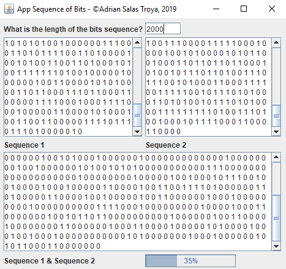
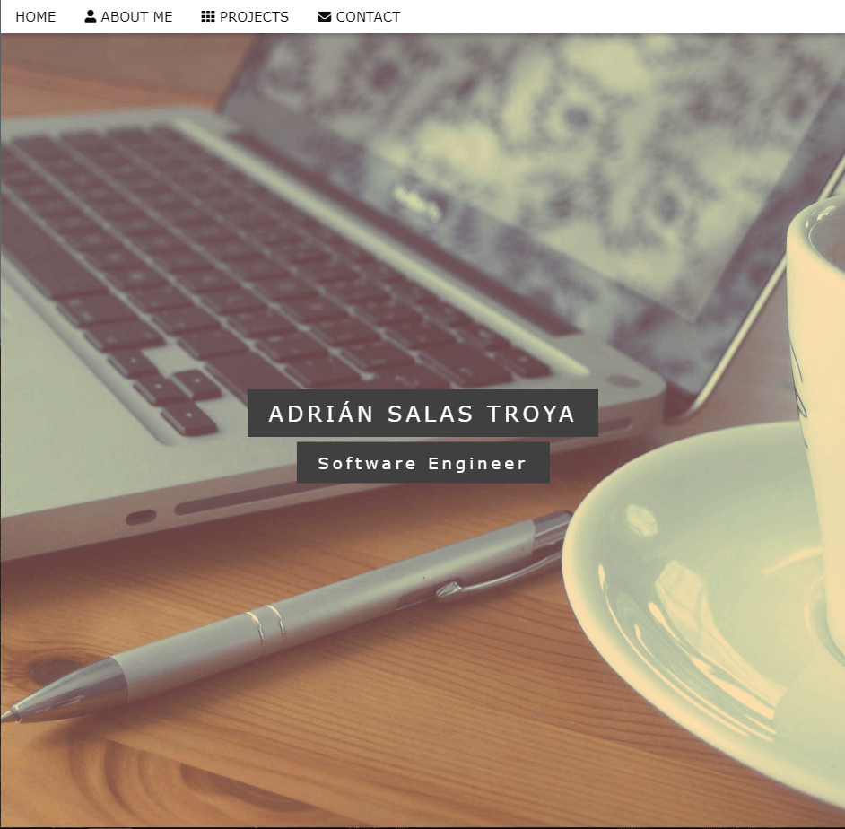
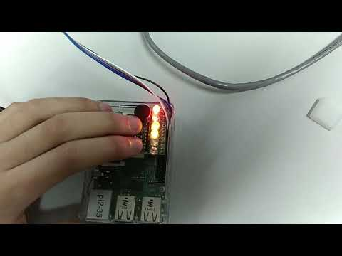

Service-learning App
Java Java Swing MySQL
University Project (in progress)
Desktop APP to manage a medic database
JavaScript Node.JS Electron MariaDB Raspberry Pi 3+
University Project (in progress)
AI in Robocode
Java
University Project. We build three different java apps using the game Robocode to apply some knowledge of AI. We wrote an A* algorithm to solve a random generate map, a genetic algorithm to improve the skill of a tank, and a neural network to predict the output of the battles before the actual battle. Github Link

PetsApp
Java UML SCRUM TDD
University Project & not finished product In this app I worked with 4 international students (1 Greek, 2 Polish, 1 Korean) to design and start developing a social benefit application. Our idea was to build an "online shelter" to help animals. We developed the backend in java and learned how to work using Test Driven Development (TDD) and SCRUM methodology. We did mock-ups of the GUI in Android Studio and HTML/CSS/JavaScript but the only part we "finished" was the business logic in Java. Github Link


Bitwise Random Generator with Threads
Java Java Swing
University Project. A desktop app that given a number of iterations it will start generating the bitwise operation of two different sequence of random bits. Two different threads are generating the bits of the Sequence 1 and Sequence 2 meanwhile a third thread is doing the bitwise operation and upgrading the progress bar. Github Link
This website 😄
HTML CSS JavaScript Bootstrap
During my years at the university I wanted to stand out as much as possible when I started looking for work. For this I decided to make this webpage that you are seeing. The most remarkable thing was that I designed and anti-spam filter for bots generating my email encoded by JavaScript and that you can check my portfolio easily. Github Link | Web Link

Website from Template
HTML CSS JavaScript W3.CSS
This is the first webpage I built. I used a w3schools template and customized it to my liking in order to familiarize myself with frontend (which is not taught in my university). Apart from simply using the template, I customized several parts of the code because I didn't like some effects and actions. Github Link | Web Link
Raspberry Pi 2 - Game LED
Assembly ARM
University Project. This is a two player game, this is supposed to be connected to bigger buttons and leds, in order to create a a game similar to "simon game". Each player needs to press his/her button when one of his leds turns on. Each time the time-frame to press the button is smaller, so you need to be fast. If you press the button when it is not your turn you loose. Github Link
Desktop App to generate OpenSCAD
Java Java Swing OpenSCAD
I collaborated with an industrial engineer for the creation of a desktop application that allowed you to modify a 3D piece previously designed in OpenSCAD. This app makes use of CMD, so despite being made in java it only works on windows and need a 2014 or 2015 OpenSCAD installation. I do not have permission to publish images of the app on the internet, if you want more info contact me by email.